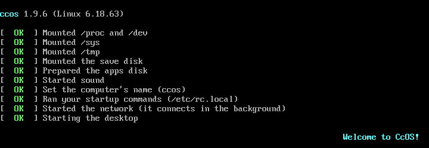

CcOS home > Docs > Getting started
[ Contents | Getting started | The desktop | Shortcuts | Files | Apps | Terminal | Help ]
CcOS runs straight from a USB stick. Nothing is installed on the computer: the computer's own drive (where Windows lives) is never touched. CcOS doesn't even have a driver for it, so it can't see it.
Pull the stick out and restart, and Windows starts like always.
The first start takes a few seconds longer: CcOS turns the empty rest of the stick into its own part, called ccos-store. Your settings, Wi-Fi networks, files, downloads and installed apps are all kept there.
CcOS shows a line for every step, like this:

Then a cyan Welcome to CcOS! appears and the desktop fades in.
| Drive | What it is |
|---|---|
| C: ccos System | CcOS itself. It's kept in memory and you can't change it. |
| D: ccos Data | Your files and settings: Documents, Images, Videos and so on. This is on the stick, so it's kept after a restart. |
| Downloads | Where Firefox and other apps save downloads. Also kept on the stick. |
Use Shut down, Restart or Sleep at the bottom of the start menu (or the power button in the bottom right corner with the Dock). Pressing the computer's power button also shuts down properly. Don't pull the stick out while CcOS is running.
CcOS checks for a new version once a day and shows a notification when there is one. Go to Settings > Update and click Install now, then restart. Your files, settings and apps stay where they are.
If a new version doesn't start properly, the stick goes back to the version before all by itself on the next start. The menu you see when the stick starts also has ccos (previous version).
Only updates signed with the CcOS release key are installed.
The keyboard starts as Polish (programmer's): Alt Gr + a, c, e, l, n, o, s, x, z types ą ć ę ł ń ó ś ź ż (hold Shift for capitals). Settings > Keyboard & mouse switches to English (US).
| << Docs | The desktop >> |
CcOS docs · written for CcOS 1.9.6